Liquid glass design
Settings, notifications, the control center, dialogs and menus share one translucent glass style with a soft rim and blur.
A calm, glassy Android for your Pixel. Built on LineageOS, with Google apps included and updates straight from Settings.
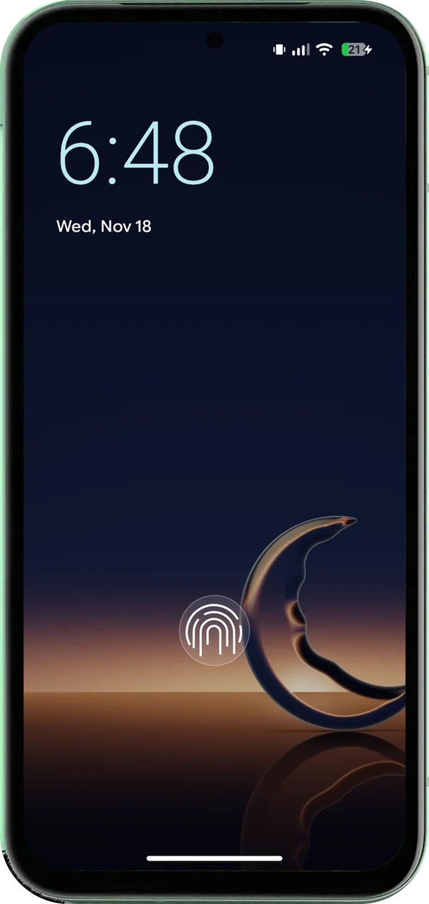
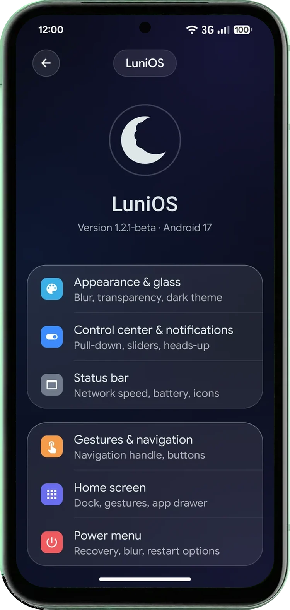
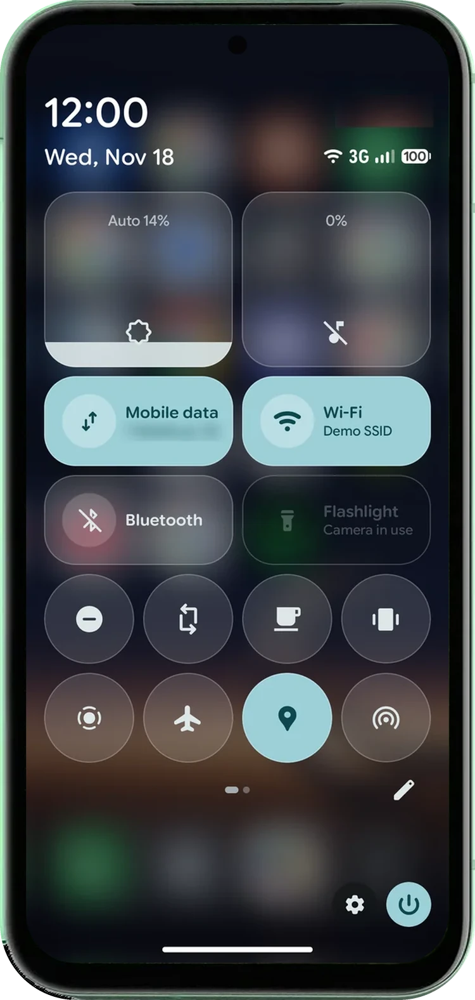
LuniOS is a custom Android ROM based on LineageOS 24.0 and Android 17. It keeps LineageOS's solid base and adds its own look: translucent glass surfaces, soft spring animations and a handful of features of its own.
It ships with Google apps, installs with its own recovery and keeps itself up to date over the air.
Settings, notifications, the control center, dialogs and menus share one translucent glass style with a soft rim and blur.
A live pill around the camera shows calls, timers, music, screen recording and charging, and expands into a card when you tap it.
LuniOS Updates downloads new builds in the background and installs them to the second slot. For now LuniOS ships on the Beta channel.
Animations run on springs, so buttons squish a little when pressed and app transitions can be interrupted at any moment.
Built on LineageOS, signed with LuniOS's own release keys as a production build. LuniOS security checks your phone and shows at a glance that it is secured.
Experiments hide behind seven taps on the LuniOS version: Luna Island notification cards with action buttons, and Glass icons that turn your home screen into frosted glass.
Real screenshots of LuniOS 1.2 beta, not mockups.
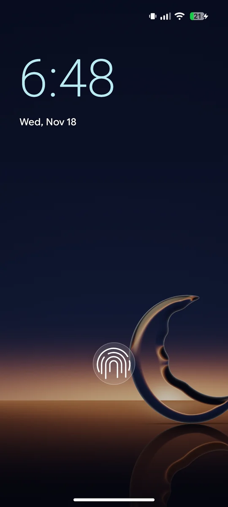
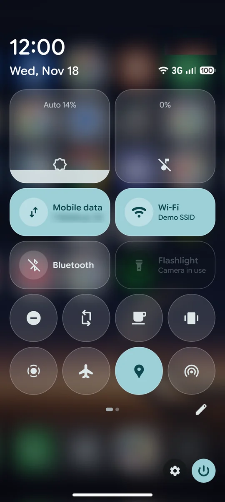
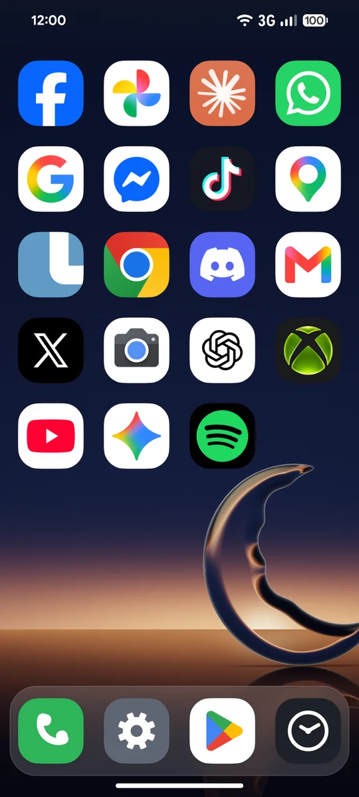
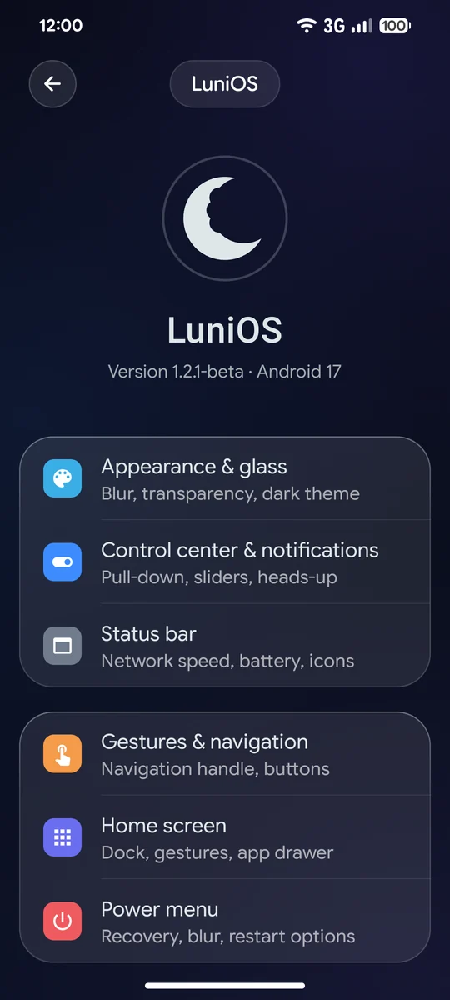
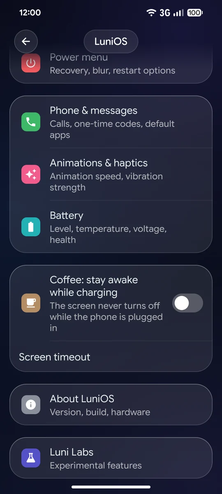
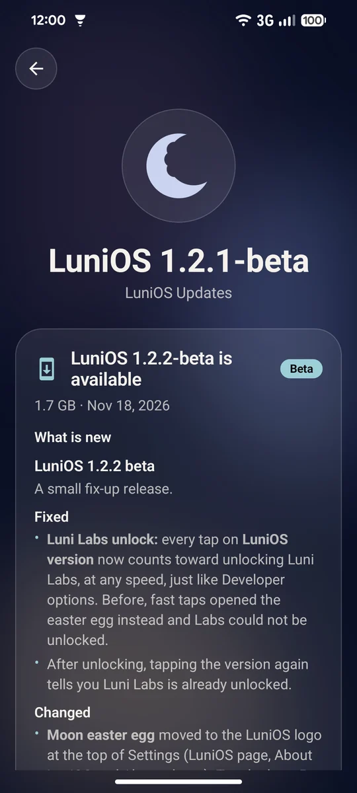
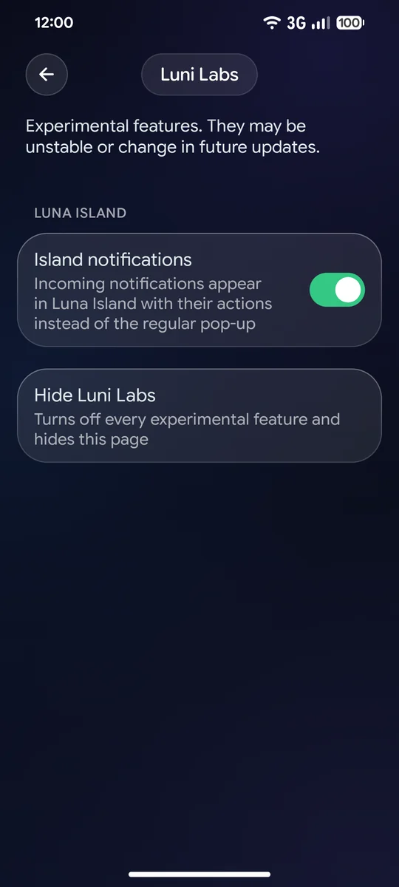
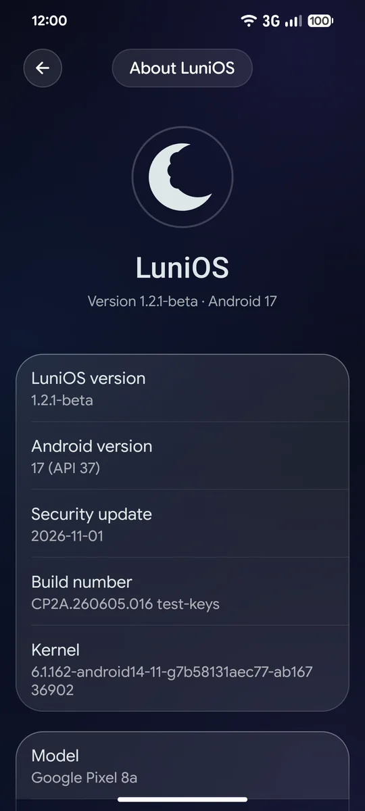
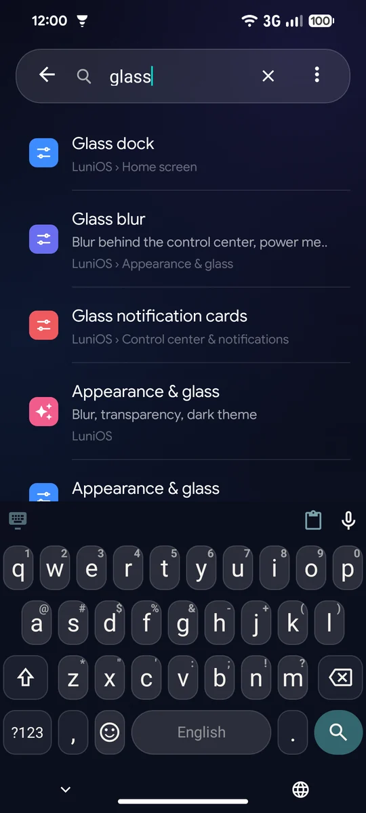
LuniOS is built with AI, and we are not hiding it. Its features, its code and this website are written together with AI coding assistants, then built and tested on a real Pixel 8a.
LuniOS is young and not finished yet, so the source is closed for now. It will be published once the project is polished enough to build on.
LuniOS is based on LineageOS and the Android Open Source Project. The hard work of running Android on real hardware comes from those projects and their contributors.
The Google Pixel 8a is the first and, for now, the only supported phone. More devices will come as people step up to maintain them.
It runs daily on the developer's own Pixel 8a, but it is an early beta. Expect rough edges and keep backups of anything important.
Yes. The Play Store and Google services come preinstalled, so you can sign in during setup.
No. Updates from LuniOS Updates keep your apps and data. Only the first installation needs a factory reset. One exception: moving from 1.2.x or older to 1.3.0 needs one clean install, because 1.3.0 switches to LuniOS's own signing keys.
Because it is still early and changing fast. The plan is to open the source once LuniOS is polished.
Some may not, because the bootloader is unlocked. LuniOS does not try to fake device certification.